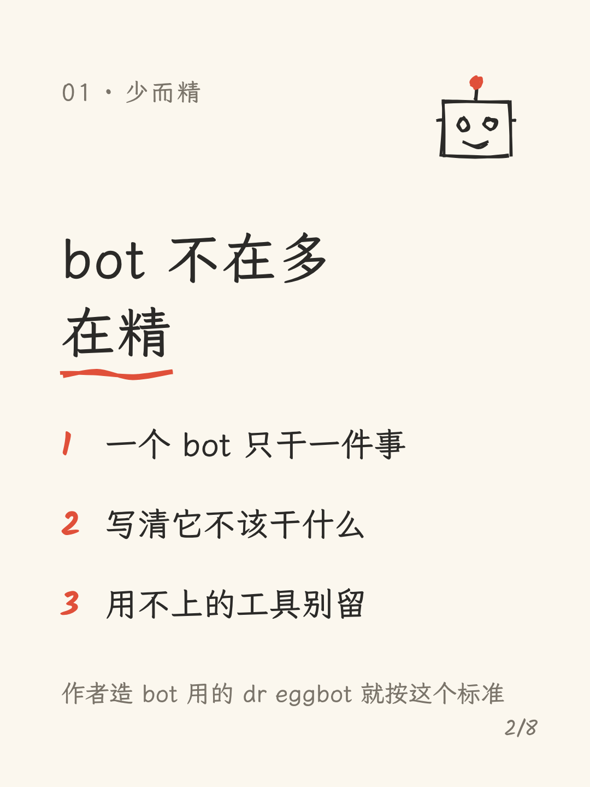
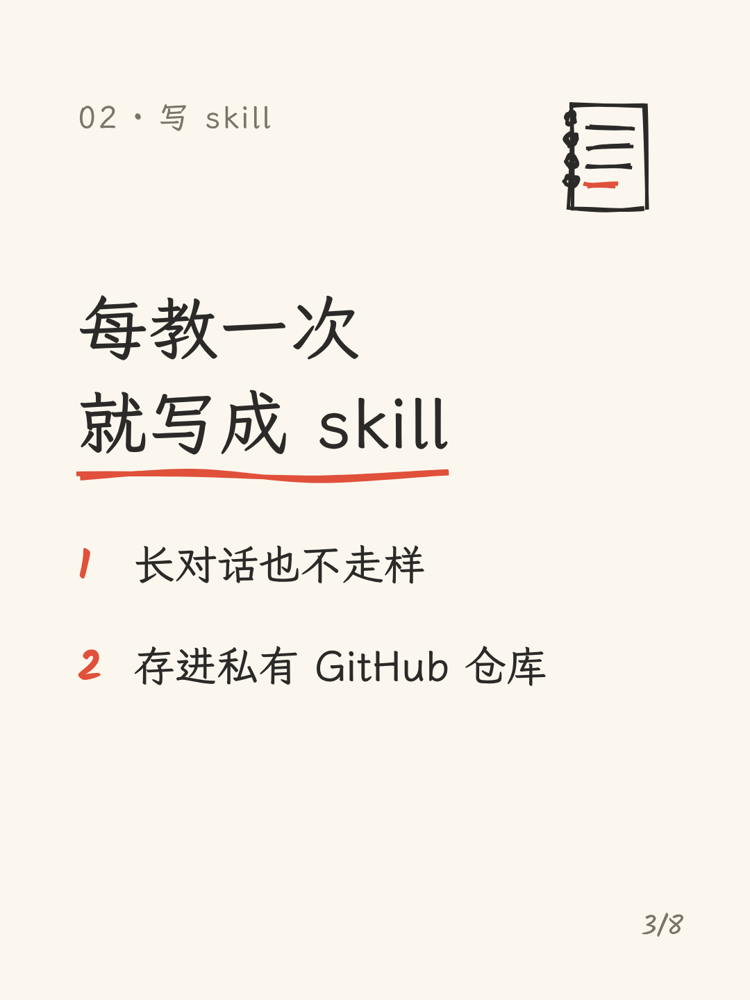
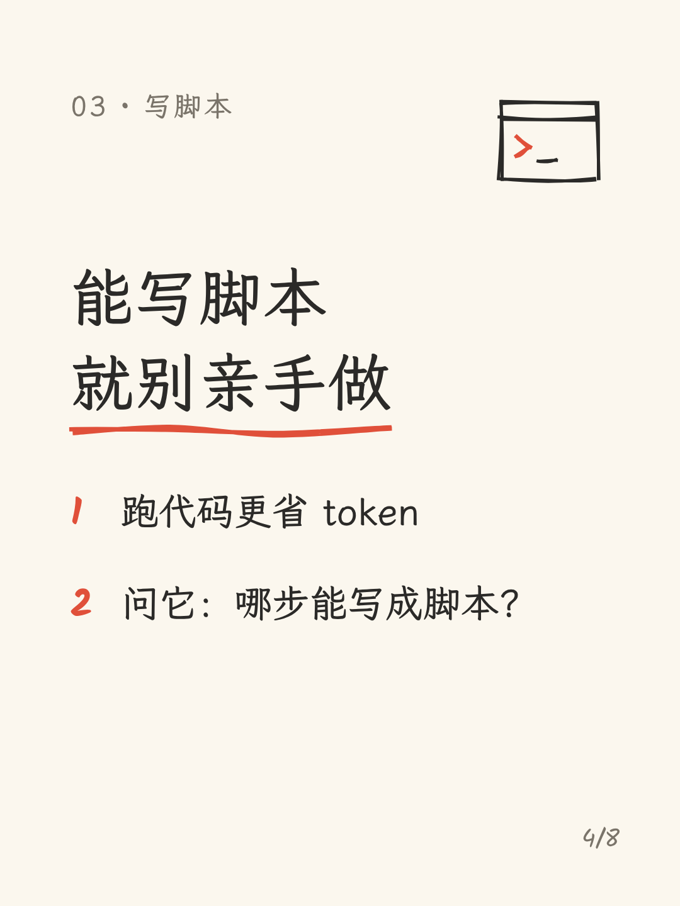
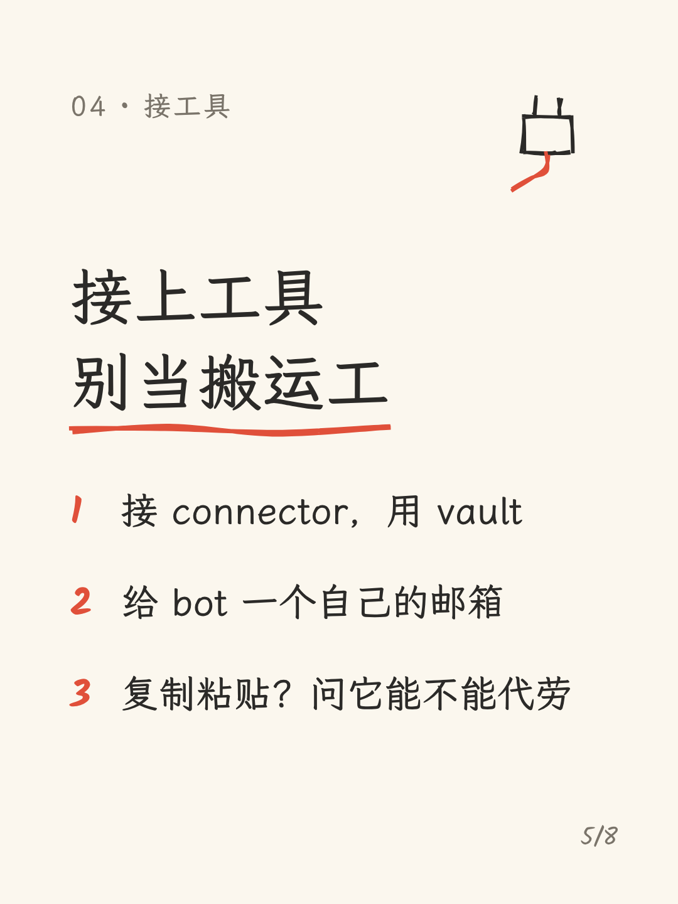
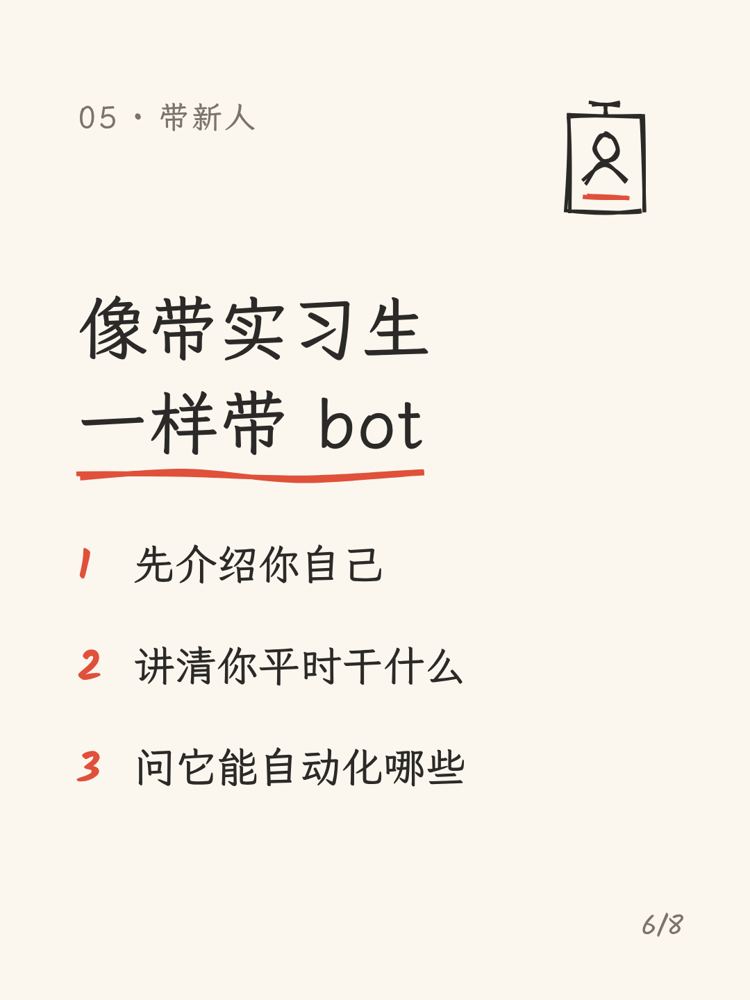
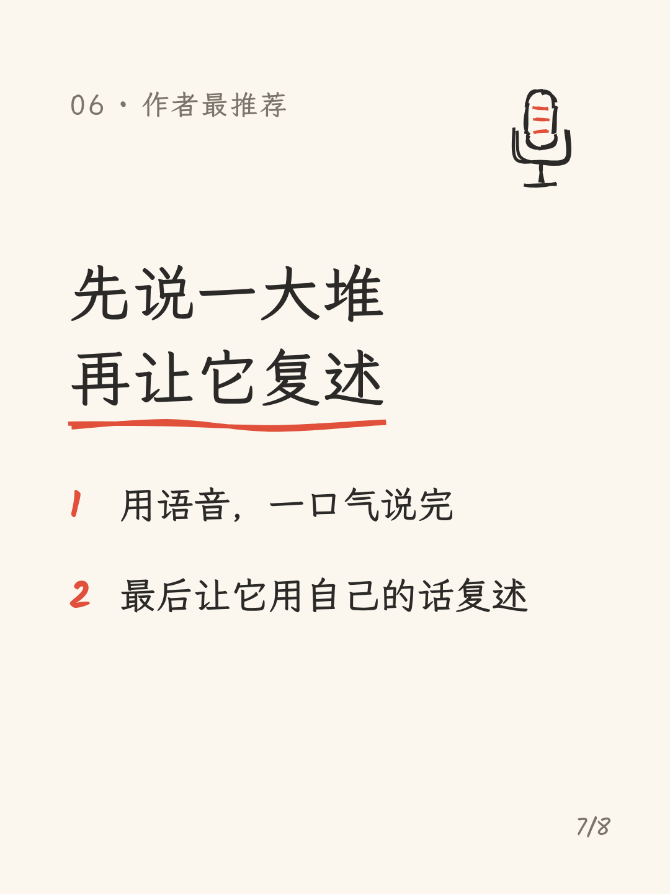
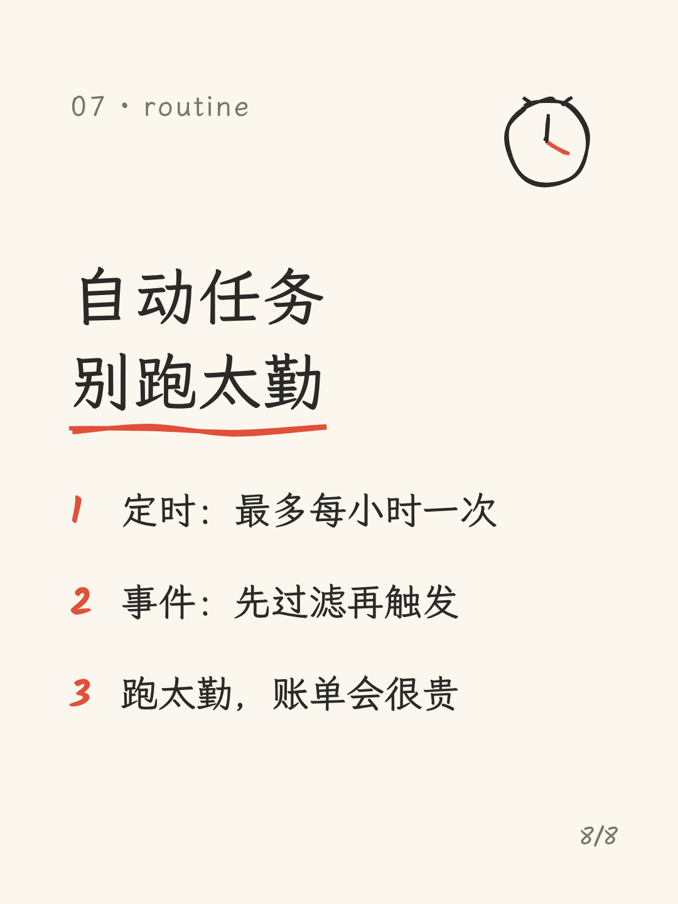

做 Grok Bot 的 @poteto 在 X 上发了一份自己的 bot 使用清单，浏览量超过 40 万，收藏数比点赞还多。我挑了最实用的几条做成图：bot 不用养太多，每个只干一件事；每教它一次，就让它写成 skill；能写成脚本的步骤，别让它每次亲手做，省 token；把工具接上，别再自己复制粘贴；像带实习生一样，先跟它讲清楚你是干什么的。作者最推荐的一招是用语音一口气说完，再让 bot 用自己的话复述一遍。完整解读和更多细节，在今天推送的长文里。






